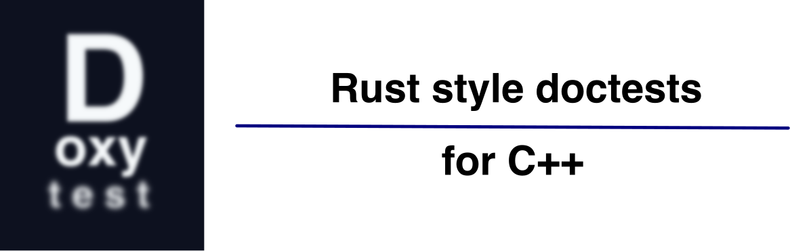

Introduction
Doxytest is a tool for generating C++ test programs from code embedded in header file comments.
The inspiration is a Rust feature called doctests.
A Rust doctest is a snippet of sample code in the documentation block above a function or type definition. The example becomes part of the documentation you see on docs.rs. Moreover, examples are typically formulated using assertions and become part of the project’s test suite.
Here is a very high-tech Rust add function — PhD-level sort of stuff:
/// Adds two numbers together.
///
/// # Examples
/// ```
/// assert_eq!(add(1, 2), 3);
/// ```
pub fn add(a: i32, b: i32) -> i32 {
a + b
}The comment block above the function definition contains a typical working code example. The sample is wrapped in a triple backtick-delimited code block and formulated as a test using Rust’s assert_eq! macro. It is a doctest.
Rust’s cargo doc command picks out specially marked comments and turns them into your project’s “official” documentation. Doxygen can similarly generate documentation for C++ functions.
However, Rust doctests are not just part of the documentation; they are also used to generate test programs. The cargo test command collects all the project’s doctests by looking for comments containing triple backtick-delimited code blocks. The extracted doctests are then compiled and run as test programs.
Looking through the source code of Rust crates, you will see lots of embedded doctests. Code in Examples sections is usually crafted as tests using Rust’s assert! and assert_eq! macros.
At first, I was sceptical about the value of this scheme. There are many comment lines in a typical Rust source file! That can make them daunting to navigate.
However, after embracing my editor’s ability to fold comments and using the doctest feature in Rust for a while, I began to wish to do the same thing in C++. Why not have simple code samples documenting how to use a function and serving as basic tests?
Hence, the Python script doxytest.py extracts code snippets from the comments in C++ header files and uses them to generate standalone C++ test programs. A companion CMake module doxytest.cmake integrates the script into a CMake project.
Scope
Doxytest is a simple tool for generating C++ test programs from code embedded in header file comments. It’s not a replacement for a full-blown testing framework like Catch2 or Google Test.
Doctests are typically just a few lines of code crafted as tests, and they primarily illustrate how to use a function or class. You’re unlikely to write many complicated edge case codes as comments in a header file.
On the other hand, once you get used to the idea, you tend to write a doctest for almost every function or class you write. So, while the depth of test coverage may not be as high as that of a full-blown testing framework, the breadth of coverage will be pretty impressive.
The breadth of coverage is very valuable when adding new features or fixing bugs. Compiling all the doctests can serve as a quick sanity check to see if you have inadvertently broken something else. And, of course, running the tests will help you catch at least basic regression errors.
If you are using Rust in an IDE like VSCode, you can run the doctest for an individual method by clicking a discrete “Run” above the method in the IDE. A “Run” button above a type definition runs all the doctests for that type.
We haven’t yet implemented a doxytest extension for VSCode. However, we have a CMake module, doxytest.cmake, that can automate extracting those tests and adding build targets for each resulting test program. This is already very useful and, if you are using the CMake Tools extension for VSCode, it will let you easily run doctests at the click of a button.
Summary
Doxytest has two main components:
- The main event is a Python script
doxytest.pythat generates standalone C++ test programs from code embedded in header file comments. - There is also a companion
CMake modulecalleddoxytest.cmakethat can automate extracting those tests and adding build targets for each resulting test program.
If you don’t use CMake, you can use the Python script directly. The module is a convenience wrapper around the script, with no dependencies on CMake.
|
Python Script Features
- The Python script generates standalone C++ test programs from code embedded in header file comments.
- It can generate those programs for multiple header files in a single run.
- It can generate a single test program containing all the combined test code from multiple header files.
- The script supports a variety of options for controlling the generation of test programs:
- You can specify the output directory for the generated test programs.
- You have control over the filename prefix for the generated test programs.
- You can specify extra header files to include in the generated test programs.
- The script has rudimentary dependency tracking, which means that the generated test programs are only recreated if the corresponding header files change.
CMake Module Features
- The CMake module automates the process of extracting those tests, and it adds build targets for each resulting test program. It will also let you easily run individual tests inside an IDE like
VSCodeat the click of a button. - Like the script, the module can generate test programs for multiple header files in a single run.
- Like the script, the module can generate a single test program containing all the combined test code from multiple header files.
- The module supports a variety of options for controlling the generation of test programs:
- You can specify the output directory for the generated test programs.
- You have control over the filename prefix for the generated test programs.
- You can specify custom header files to include in the generated test programs.
- The module uses CMake to handle the dependency tracking so that the generated test programs are only rebuilt if the corresponding header files change or the script is updated.
Basic Usage
Here is a C++ header file, add.h, equivalent to add.rs above. Like the Rust version, there is a comment block containing a sample code snippet:
/// @brief Adds two numbers together.
///
/// # Examples
/// ```
1/// assert_eq(add(1, 2), 3);
/// ```
constexpr int add(int a, int b) { return a + b; }- 1
-
assert_eqis used to assert that two values are equal.
On failure, it prints the values of the arguments and may terminate the program.
C++ has an assert macro, but it is not very useful for testing because it does not print the values of the expression that failed the assertion. For that reason, in the doxytest generated code, we overwrite that with our own version of assert and also provide the assert_eq macro, referenced in the example. The two doxytest assertion macros are automatically defined and included in the test programs generated by doxytest.py. They only have an effect in test code extracted from doctests.
|
You can run the doxytest.py script on this header file:
doxytest.py add.hWhich will print the message Generated test file: doxy_add.cpp with 1 test cases and then create the file doxy_add.cpp in the current directory.
If you look at doxy_add.cpp, you will see an include directive for add.h, the definition of our version of assert and assert_eq, and a main program that contains the tests (just one in this example) in their own try blocks.
You can compile the test program using your favourite C++ compiler; for example, using g++:
g++ -std=c++23 -o doxy_add doxy_add.cpp
The doxyscript generated test source uses std::println and friends, so typically you need to invoke the compiler with an appropriate level of “modernity” to access those features.
|
Running ./doxy_add prints some output along the lines:
Running 1 tests extracted from: `add.h`
test 1/1 (add.h:4) ... pass
[add.h] All 1 tests PASSEDNext Steps
Check out the doxytest.py script story and its full reference page.
Get more information about the two provided assertion macros and examine some more advanced custom use scenarios.
If you use CMake, be sure also to check out doxytest.cmake.